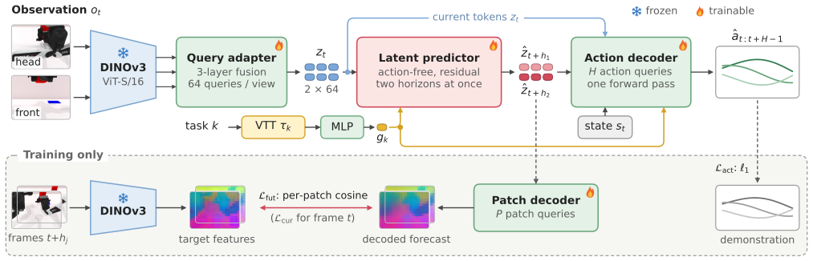
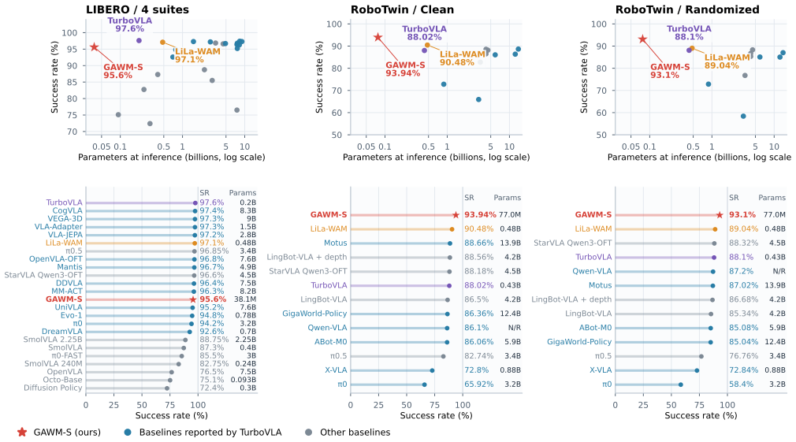
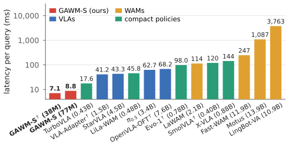
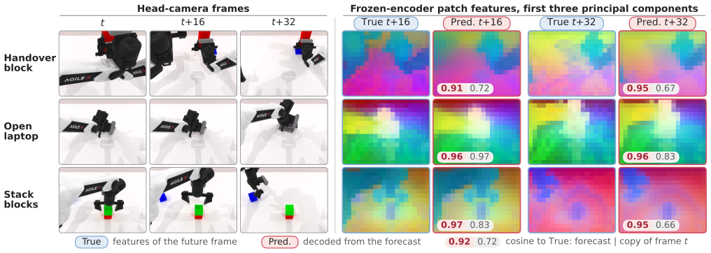
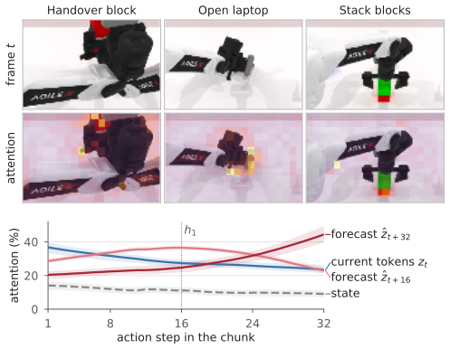

World-action models (WAMs) incorporate the prediction of future observations into robot policy learning. However, most WAMs build on billion-parameter vision-language or video-generation backbones, which incur high training cost and inference latency. In this letter, we present GAWM (Geometry-Aware World Model), a compact multi-task WAM that predicts future observations in the latent space of a frozen DINOv3 encoder. GAWM compresses the features of each camera view into a small set of tokens. A lightweight predictor, conditioned on the task rather than on actions, forecasts these tokens at two future horizons. The forecast is supervised with the dense patch features of future frames, which requires it to encode the spatial layout of the future scene. An action decoder directly regresses a chunk of future actions from the current and predicted tokens. With fewer than 100M parameters and no robot or video pretraining, GAWM outperforms billion-parameter WAMs on RoboTwin 2.0 and performs comparably to billion-parameter VLAs on LIBERO. On a dual-arm robot, it achieves lower action-prediction error on held-out demonstrations than a fine-tuned billion-parameter VLA, with substantially lower inference latency. Ablation studies show that the latent world model substantially improves performance when training data or training time is limited.
GAWM A Compact Latent World-Action Model for Multi-Task Robot Manipulation
no VLM or video generator
clean / randomized, 77M
with 38M parameters
lowest of all compared methods
Abstract
OverviewReal-robot task · green bottle. Head-camera views (top) and wrist-camera views (bottom) of a demonstration. Click a key frame to jump to that phase. Details in Sec. 05.
Task-Conditioned Latent Foresight
Method
Overview of GAWM. A frozen DINOv3 encoder and a query adapter encode each camera view into 64 visual tokens. The latent predictor, conditioned on the task code, forecasts these tokens at two future horizons, and the action decoder directly regresses a chunk of future actions from the current tokens, the forecast, the robot state and the task code. Dashed panel: training only; a patch decoder maps the forecast to the encoder's patch features of the recorded future frames.
Frozen tokens
Three DINOv3 ViT-S/16 layers are fused into 64 tokens per view. The task code comes from demonstrations, so no language model is needed.
Action-free predictor
A 4–6M-parameter predictor forecasts the tokens at the chunk's midpoint and end in parallel, without actions or search.
Dense supervision
The forecast is matched to the frozen encoder's patch features of future frames, so it must encode where the gripper and objects will be. A frozen target cannot collapse.
One-pass decoding
An ACT-style decoder regresses the whole chunk with an ℓ1 loss. No iterative sampling at inference.
Implementation details
| Setting | LIBERO | RoboTwin 2.0 |
|---|---|---|
| Parameters at inference | 38M | 77M |
| Adapter / predictor / decoder | 2 layers (w 384) / 2 blocks / 2 layers | 4 layers (w 768) / 4 blocks / 3 layers |
| Actions | 6-D end-effector deltas + gripper | 14-D absolute joint targets (16-D end-effector state) |
| Chunk H, horizons (h1, h2) | 8, (4, 8) | 32, (16, 32); first 16 steps executed |
| Training | 80k steps, batch 160, 8 GPUs | 765k steps, batch 128, 32 GPUs, + 9.6k-step task-code fine-tuning |
Frozen DINOv3 ViT-S/16 (layers 7, 9, 11; 21.6M). AdamW, learning rate 2×10−4, two-phase cosine schedule; λfut=1, λcur=0.1, λreg=0.02, λtmp=0 (LIBERO) / 0.1 (RoboTwin 2.0). The predictor has 4.0M / 6.0M parameters; the 5.1M-parameter patch decoder is used only in training and is not counted.
Small Model, Large-Model Performance
Benchmarks
Success rate versus parameters at inference on LIBERO (left; GAWM-S with additional in-domain data) and on the clean (middle) and randomized (right) settings of RoboTwin 2.0. Bottom: methods ranked by success rate. On RoboTwin 2.0, GAWM-S is the smallest and best-performing of the plotted methods.
Full comparison table (Table I)
| Method | Params | Robot PT | Task | LIBERO | RoboTwin 2.0 | |||||
|---|---|---|---|---|---|---|---|---|---|---|
| Spatial | Object | Goal | Long | Avg. | Clean | Rand. | ||||
| Vision-language-action models | ||||||||||
| OpenVLA | 7.5B* | ✓ | Lang. | 84.7 | 88.4 | 79.2 | 53.7 | 76.5 | – | – |
| π0 | 3.2B* | ✓ | Lang. | 96.8 | 98.8 | 95.8 | 85.2 | 94.2 | – | – |
| π0.5 | 3.4B | ✓ | Lang. | 98.8 | 98.2 | 98.0 | 92.4 | 96.9 | 82.74a | 76.76a |
| OpenVLA-OFT | 7.6B | ✓ | Lang. | 97.7 | 98.0 | 96.1 | 95.3 | 96.8 | – | – |
| VLA-Adapter | 1.5B | ✗ | Lang. | 97.8 | 99.2 | 97.2 | 95.0 | 97.3 | – | – |
| StarVLA Qwen3-OFT | 4.5B | n/s | Lang. | 97.8 | 98.6 | 96.2 | 93.8 | 96.6 | 88.18 | 88.32 |
| VLAct-PI | ≈4B* | ✓ | Lang. | – | – | – | – | – | 93.0 | 88.8 |
| World-action models | ||||||||||
| Fast-WAM | 11.9B | ✗b | Lang. | 98.2 | 100.0 | 97.0 | 95.2 | 97.6 | 91.88 | 91.78 |
| LingBot-VA | 10.9B | ✓ | Lang. | 98.5 | 99.6 | 97.2 | 98.5 | 98.5 | 92.93 | 91.55 |
| LaWAM | 2.1B | ✓ | Lang. | 99.4 | 99.6 | 98.4 | 97.0 | 98.6 | 92.64 | 89.80 |
| Motus | 13.9B | ✓ | Lang. | – | – | – | – | – | 88.66 | 87.02 |
| Compact policies (<1B) | ||||||||||
| Octo-Base | 93M* | ✓ | Lang. | 78.9 | 85.7 | 84.6 | 51.1 | 75.1 | – | – |
| SmolVLA | 0.40B | ✗ | Lang. | 90.0 | 96.0 | 92.0 | 71.0 | 87.3c | – | – |
| Evo-1 | 0.78B | ✗ | Lang. | 92.7 | 97.7 | 96.3 | 92.3 | 94.8c | – | – |
| X-VLA | 0.88B | ✓ | Lang. | 98.2 | 98.6 | 97.8 | 97.6 | 98.1 | 72.80a | 72.84a |
| TurboVLAd | 0.2*/0.43B | ✗ | Lang. | 97.0 | 100.0 | 98.2 | 95.2 | 97.6 | 88.02 | 88.10 |
| LiLa-WAMe | 0.48B | ✗ | ID | 98.0 | 98.8 | 97.2 | 94.2 | 97.1 | 90.48c | 89.04c |
| GAWM-S†f (ours) | 38/77M | ✗ | ID | 96.2 | 99.8 | 95.0 | 91.2 | 95.6 | 93.94 | 93.10 |
Success rates (%). Params: parameters of the modules that compute an action chunk from the observation and the instruction, including frozen image, text and VAE encoders; modules used only in training or only for outputs the actions do not depend on are excluded. Robot PT: pretraining on robot data or embodied videos. Task: language instruction (Lang.) or task identifier (ID). RoboTwin 2.0: mixed protocol. Bold: best; underlined: second best (LIBERO columns exclude the † row). –: not reported; n/s: not stated. * Reported by the authors or by TurboVLA; not recounted. a Reproduced by LingBot-VLA (π0.5) and Motus (X-VLA). b Initialized from a pretrained video generator. c Fewer evaluation episodes. d 0.2B on LIBERO, 0.43B on RoboTwin 2.0 (three cameras, unseen instructions). e One policy per LIBERO suite; one third-person camera on RoboTwin 2.0. f 38M on LIBERO, 77M on RoboTwin 2.0. † Trained on the Extended LIBERO data.
The lowest inference latency of all compared methods

Inference latency per action-chunk query. Official implementations on the same GPU (NVIDIA RTX PRO 5000), batch size 1, default precision and denoising steps; median of 200 queries, from preprocessed inputs to the action chunk. GAWM-S takes 8.8 ms on RoboTwin 2.0 and 7.1 ms on LIBERO, compared with 17.6–143.5 ms for the other compact policies, 41.2–68.2 ms for the VLAs and 114–3,763 ms for the WAMs. †: LIBERO configuration; all others use RoboTwin 2.0.
A small model is enough
What Does the World Model Contribute?
Ablation · AnalysisThe world model matters most when data or training time is limited
| Variant | LIBERO, ¼ data | LIBERO Ext. | RoboTwin 191k steps | ||||
|---|---|---|---|---|---|---|---|
| Spatial | Object | Goal | Long | Avg. | |||
| GAWM-S | 90.2 | 85.4 | 87.8 | 58.4 | 80.5 | 95.6 | 90.7 |
| w/o world model | 77.2 | 89.0 | 80.2 | 37.4 | 71.0 | 93.1 | 18.8 |
| Δ (95% CI) | +13.0 | −3.6 | +7.6 | +21.0 | +9.5 [5.2, 14.2] | +2.5 [−0.8, 6.1] | +71.9 [65.2, 78.0] |
Success rates (%). Without the world model, GAWM reduces to an ACT-style policy on the same frozen features. The gain grows as data or training time become scarce; with the short RoboTwin schedule GAWM-S wins on all 50 tasks. Δ: paired per-task difference with bootstrap 95% CI.
The forecast encodes the future spatial layout

Decoded forecasts on RoboTwin 2.0. Right: PCA of the true future patch features (True) and of the decoded forecast (Pred.), with cosine similarity to True for the forecast and for frame t.
The action decoder reads the forecast in temporal order
Each action step attends most to the tokens closest to it in time: early steps to the current tokens, middle steps to the near forecast, late steps to the far forecast. The share of the far forecast rises from 20% to 44% over the chunk, and this progression holds for all 1,000 anchors. The adapter attention peaks on the gripper fingers and the manipulated objects.

Top: adapter attention over the patches. Bottom: decoder attention share per memory group and action step.
Real-Robot Evaluation
Real WorldOn a dual-arm Tianji Marvin Pro, the left arm picks a target bottle from a shelf of five and hands it to the right arm, which places it on the table. The four tasks share the same scene, so the task code is the only cue to the target. GAWM-S uses all three cameras and is fine-tuned from the 765k-step RoboTwin 2.0 model; the baseline is π0.5, LoRA fine-tuned with language instructions. We compare predicted actions with the recorded ones on held-out demonstrations and run closed-loop trials on the robot.
| Metric | GAWM-S | π0.5 (40k) | π0.5 (60k) |
|---|---|---|---|
| Joint error, first step (rad) ↓ | 0.072 | 0.098 | 0.092 |
| Joint error, full chunk (rad) ↓ | 0.088a | 0.106b | 0.101b |
| Gripper error, first step ↓ | 0.020 | 0.028 | 0.023 |
| Closed-loop success, yellow bottle ↑ | 46/50c | – | 39/50 |
| Latency, median / 95th pct. (ms) ↓ | 9.3 / 9.6 | 63.8 / 63.9 | |
Errors: mean absolute error on the 81 test demos w.r.t. the recorded joint targets of both arms (rad) and gripper commands. Success: trials in which the bottle is placed on the table (92% [81.2, 96.8] vs. 78% [64.8, 87.2]). Latency: batch size 1 on the same RTX PRO 5000 GPU, measured as in the latency figure. a Over 16 steps. b Over 20 steps. c Fine-tuned for 60k steps.
Third-person view of the handover task.
Per-arm breakdown on the 33 validation demos
| Metric | GAWM-S | π0.5 (40k) |
|---|---|---|
| First inference, excluding model loading (s) ↓ | 0.386 | 10.420 |
| Left arm and gripper | ||
| Joint MAE, first step / first 5 steps (rad) ↓ | 0.0177 / 0.0196 | 0.0221 / 0.0215 |
| Joint MAE, common 16-step horizon (rad) ↓ | 0.0254 | 0.0227 |
| Gripper, first-step MAE ↓ / state accuracy (%) ↑ | 0.0058 / 99.45 | 0.0156 / 99.16 |
| Right arm and gripper | ||
| Joint MAE, first step / first 5 steps (rad) ↓ | 0.0234 / 0.0269 | 0.0324 / 0.0312 |
| Joint MAE, common 16-step horizon (rad) ↓ | 0.0377 | 0.0328 |
| Gripper, first-step MAE ↓ / state accuracy (%) ↑ | 0.0124 / 98.76 | 0.0245 / 98.32 |
33 trajectories, 11,039 frames; raw predictions. Gripper accuracy: first-step binary agreement at threshold 0.5. Offline errors are not task success rates. This subset was held out for GAWM, whereas the π0.5 training configuration does not exclude these episodes.
Conclusion
TakeawaysOn closed task sets, a compact task-conditioned latent predictor can provide a reactive policy with the foresight that existing WAMs obtain from billion-parameter backbones. This foresight encodes the future layout of the scene and substantially improves success when training data or training time is limited. Limitation: GAWM targets a closed task set and does not interpret language; we plan to pair it with a large language model that maps open-ended instructions to the known tasks.
Citation
BibTeX@article{gawm2026,
title = {{GAWM}: A Compact Latent World-Action Model for Multi-Task Robot Manipulation},
author = {Liu, Yang and Liu, Xiaoli and Li, Liuzhao and Song, Yuduo and Liu, Muyuan and Gao, Xiang},
journal = {arXiv preprint arXiv:2610.37091},
year = {2026},
eprint = {2610.37091},
archivePrefix = {arXiv},
url = {https://arxiv.org/abs/2610.37091}
}